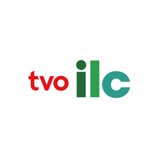

§1Education
2025 – Present
 Toronto Metropolitan University
Toronto Metropolitan UniversityMechatronics Engineering, BEng (Hons)
Mechatronics blends mechanical, electrical, and software engineering into one integrated discipline. First-year coursework so far spans circuits, calculus, linear algebra, and mechanics; GPA and course highlights to be added here as the program progresses.
2024 – 2025
Pearson Edexcel International A LevelSt. Benedict's College, Colombo
Math: A, Physics: A, IT: B
Sat in the same academic year as serving Deputy Head Prefect and holding club responsibilities, balancing sixth-form coursework with leadership commitments.
2024 – 2025

SCH4U: ChemistryTVO Independent Learning CentreChemistry was offered at St. Benedict's but wasn't part of the A-Level combination taken there. Completed independently through TVO's online program afterward, since SCH4U is a prerequisite for engineering programs in Canada.
2022 – 2023
St. Benedict's College, Colombo
GCE Ordinary Level, 9 A passes
GCE Ordinary Level (O/Level) is Sri Lanka's national secondary school examination, administered by the Department of Examinations. Full subject set, sat at St. Benedict's College.